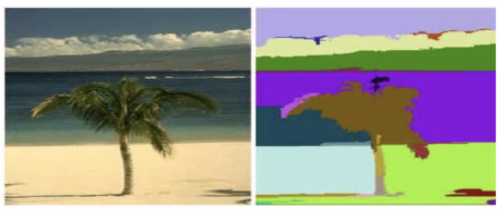
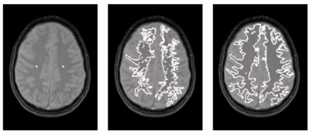

Introduction
Segmentation subdivides an image into its constituent regions or objects until the objects of interest in an
application have been objects, until the objects of interest in an application have been isolated.
This process involves dividing the image into smaller segments that have a certain set of rules.
This technique employs an algorithm that divides the image into several components with common pixel characteristics.
The process looks out for chunks of segments within the image.
Small segments can include similar pixels from neighboring pixels and subsequently grow in size.
The algorithm can pick up the gray level from surrounding pixels.

Region Growing Segmentation
Region-growing methods rely mainly on the assumption that the neighboring pixels within
one region have similar values. The common procedure is to compare one pixel with its
neighbors. If a similarity criterion is satisfied, the pixel can be set to belong to the cluster as one or more of its neighbors. The selection of the similarity criterion is significant, and the results are influenced by noise in all instances.
This method takes a set of seeds as input along with the image.
The seeds mark each of the objects to be segmented.
The regions are iteratively grown by comparison of all unallocated neighboring pixels to the regions.
The difference between a pixel’s intensity value and the region’s mean are used as a measure of similarity.
The pixel with the smallest difference measured in this way is assigned to the respective region.
This process continues until all pixels are assigned to a region.
Because seeded region growing requires seeds as additional input, the segmentation results are dependent on the choice of seeds, and noise in the image can cause the seeds to be poorly placed.

Algorithm Steps
- Seed Point Selection
Seed points can be selected manually or automatically using methods like edge detection, corner detection, or region-based statistics. The choice of seed points significantly affects the final segmentation result. - Defining the Similarity Criteria
A similarity measure must be defined to determine whether a pixel is "similar enough" to be included in a region. Common criteria include:- Absolute intensity difference: |I_neighbor - I_seed| < T
- Euclidean distance in color space
- Texture similarity
- Region Growing Process
The algorithm begins with the seed and checks all neighbouring pixels. If a neighbouring pixel satisfies the similarity condition, it is included in the region, and its own neighbours are checked in the next iteration. The region grows outward until no more pixels meet the criteria. - Stopping Condition
The process stops when:- No further pixels meet the inclusion criteria.
- A maximum region size is reached.
- All pixels in the image have been classified. All pixels in the image have been classified.